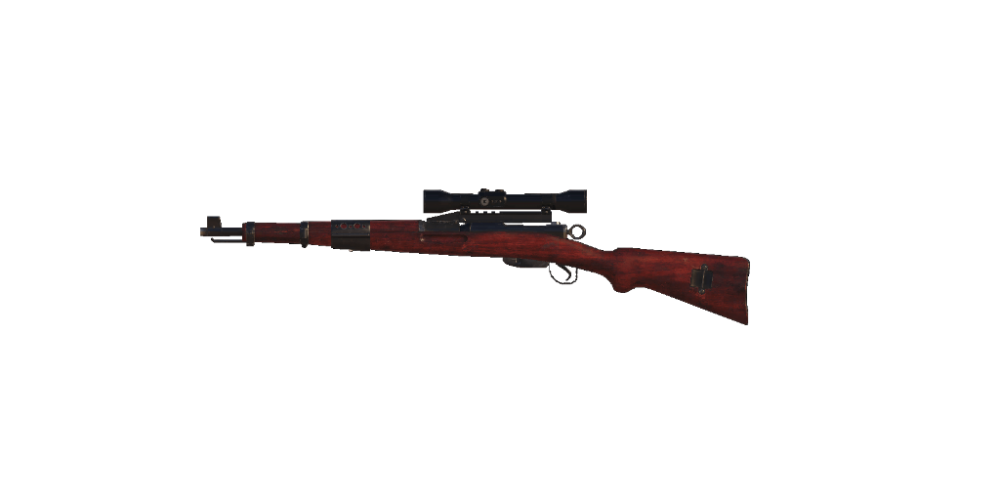

Doporučený loadout
Muzzle
24.9" COMBAT RECON
Laser
SWAT 5MW LASER SIGHT
Optic
AXIAL ARMS 3X
Underbarrel
BRUISER GRIP
Rear Grip
SERPENT WRAP
Foto
Statistiky
Reálné informace
Karabiner Modell 1931 je puška s přímotažným závěrem a zásobníkem. Byla to standardně vydávaná puška švýcarských ozbrojených sil od roku 1933 do roku 1958, i když její exempláře zůstaly ve službě až do 70. let 20. století. Má šestiranný vyjímatelný zásobník a je komorována pro náboj 7,5×55 mm Swiss Gewehrpatrone 1911 nebo GP 11, který má podobné balistické vlastnosti jako náboj 7,62×51 mm NATO/.308 Winchester. Součástí každé pušky byl šestiranný odnímatelný schránkový zásobník s odpovídajícím vyraženým sériovým číslem. K nabíjení zásobníku z horní části závěru lze použít odepínací zásobník.
Karabina Modell 1931 nahradila pušku i karabinu Model 1911 a od roku 1958 ji postupně nahradil model Stgw 57.